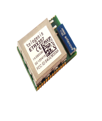
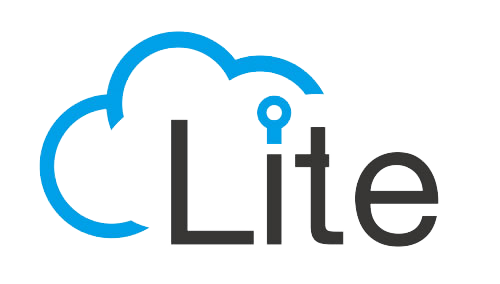

An IoT ecosystem consists of web-enabled smart devices that use embedded systems, such as processors, sensors and communication hardware, to collect,
send and act on data they acquire from their environments. IoT devices share the sensor data they collect by connecting to an IoT gateway or other edge device where
data is either sent to the cloud to be analyzed or analyzed locally. Sometimes, these devices communicate with other related devices and act on the information they
get from one another. The devices do most of the work without human intervention, although people can interact with the devices -- for instance, to set them up, give
them instructions or access the data.

Zigbee
IPv6 over Low-Power Wireless Personal Area Networks (6LoWPAN)
is an open standard defined
by the Internet Engineering Task Force (IETF).
The 6LoWPAN standard enables any low-power radio
to communicate to the internet, including
804.15.4, Bluetooth Low Energy (BLE) and Z-Wave (for home automation).
IPV6
ZigBee is a low-power,
low-data rate wireless network
used mainly in industrial settings.
ZigBee Alliance created Dotdot,
the universal language for IoT
that enables smart objects to work securely
on any network and understand each other

LiteOs
LiteOS is a Unix-like operating system (OS)
for wireless sensor networks.
LiteOS supports smartphones, wearables,
intelligent manufacturing applications, smart homes
and the internet of vehicles (IoV).
The OS also serves as a smart device development platform.